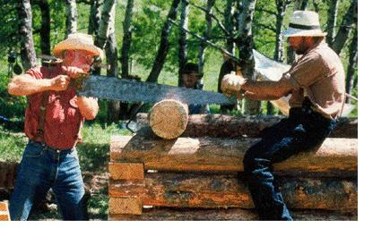

Pbs Gets Real With Frontier House
By the Mother Earth News editors
April/May 2002
Green Gazette
"Survivor." Competing six-person tribes play memory games to gain chocolate from manipulative host-god. "Real World:" Unemployed 20-somethings with absolutely nothing in common live in multimillion-dollar luxury and argue about racial connotations of bird names. "Big Brother:" Antisocial strangers cohabitate in a sparse, barrack-style house and do ... well, not a whole lot.
The recent spate of reality television shows hasn't exactly lived up to the "real" part. Which is perhaps why PBS has chosen to label its new reality show, "The Frontier House," a six-part "experiential history."
The show, premiering on May 1, follows three families as they try to mimic 19th-century life in Montana, using only tools and technology that would have been available to period homesteaders.
Challenges on the show are unscripted: a June snowstorm, forest fire and unanticipated weight loss are a few. And although there are some unrealities-the families don't have to face a Montana winter-the show should be full of entertaining, practical information for modern-day homesteaders.
Click image for a large view
Gazzette is written by Sarah Beth Cavanah except where noted.
|
 Photo: COURTESY OF PBS |
 Photo: COURTESY OF PBS (2) |
|